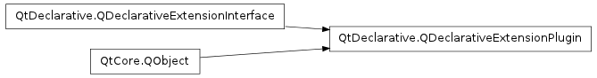

QDeclarativeExtensionPlugin ¶

Detailed Description ¶
The PySide.QtDeclarative.QDeclarativeExtensionPlugin class provides an abstract base for custom QML extension plugins.
PySide.QtDeclarative.QDeclarativeExtensionPlugin is a plugin interface that makes it possible to create QML extensions that can be loaded dynamically into QML applications. These extensions allow custom QML types to be made available to the QML engine.
To write a QML extension plugin:
- Subclass PySide.QtDeclarative.QDeclarativeExtensionPlugin , implement PySide.QtDeclarative.QDeclarativeExtensionPlugin.registerTypes() method to register types using qmlRegisterType() , and export the class using the Q_EXPORT_PLUGIN2() macro
- Write an appropriate project file for the plugin
- Create a qmldir file to describe the plugin
QML extension plugins can be used to provide either application-specific or library-like plugins. Library plugins should limit themselves to registering types, as any manipulation of the engine’s root context may cause conflicts or other issues in the library user’s code.
An example ¶
Suppose there is a new TimeModel C++ class that should be made available as a new QML element. It provides the current time through hour and minute properties, like this:
class TimeModel ( QObject ): hour = Property ( int , getHour , notify = timeChanged ) minute = Property ( int , getMinute , notify = timeChanged ) ...To make this class available as a QML type, create a plugin that registers this type with a specific module using qmlRegisterType() . For this example the plugin module will be named com.nokia.TimeExample (as defined in the project file further below).
class QExampleQmlPlugin ( QDeclarativeExtensionPlugin ): def registerTypes ( self , uri ): assert ( uri == "com.nokia.TimeExample" ) qmlRegisterType ( TimeModel , uri , 1 , 0 , "Time" ) # This isn't supported by PySide yet. # Q_EXPORT_PLUGIN2(qmlqtimeexampleplugin, QExampleQmlPlugin);This registers the TimeModel class with the 1.0 version of this plugin library, as a QML type called Time . The Q_ASSERT statement ensures the module is imported correctly by any QML components that use this plugin.
The project file defines the project as a plugin library and specifies it should be built into the com/nokia/TimeExample directory:
TEMPLATE = lib CONFIG += qt plugin QT += declarative DESTDIR = com/nokia/TimeExample TARGET = qmlqtimeexampleplugin ...Finally, a qmldir file is required in the com/nokia/TimeExample directory that describes the plugin. This directory includes a Clock.qml file that should be bundled with the plugin, so it needs to be specified in the qmldir file:
Clock 1.0 Clock.qml plugin qmlqtimeexamplepluginOnce the project is built and installed, the new Time element can be used by any QML component that imports the com.nokia.TimeExample module:
import com.nokia.TimeExample 1.0 // import types from the plugin Clock { // this class is defined in QML (com/nokia/TimeExample/Clock.qml) Time { // this class is defined in C++ (plugin.cpp) id: time } hours: time.hour minutes: time.minute }The full source code is available in the plugins example .
The Tutorial: Writing QML extensions with C++ also contains a chapter on creating QML plugins.
See also
QDeclarativeEngine.importPlugin() How to Create Qt Plugins
- class PySide.QtDeclarative. QDeclarativeExtensionPlugin ( [ parent=None ] ) ¶
-
Parameters: parent – PySide.QtCore.QObject Constructs a QML extension plugin with the given parent .
Note that this constructor is invoked automatically by the Q_EXPORT_PLUGIN2() macro, so there is no need for calling it explicitly.